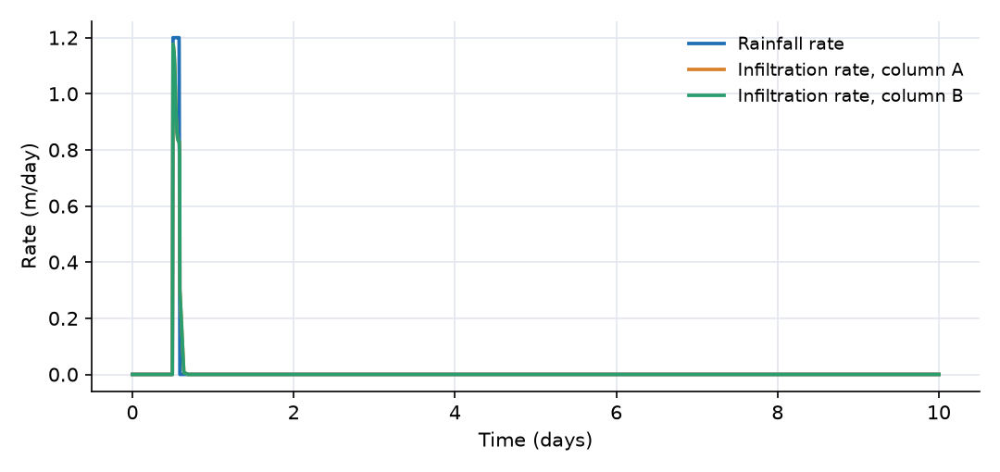
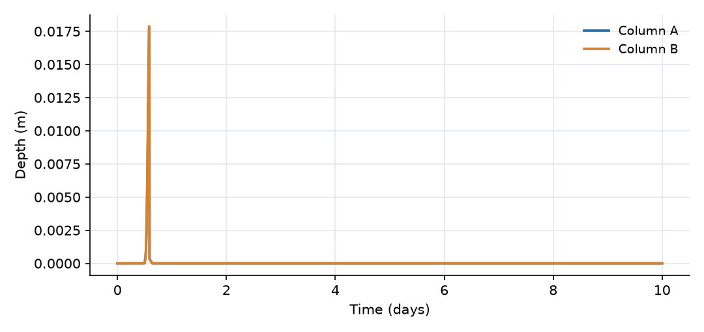
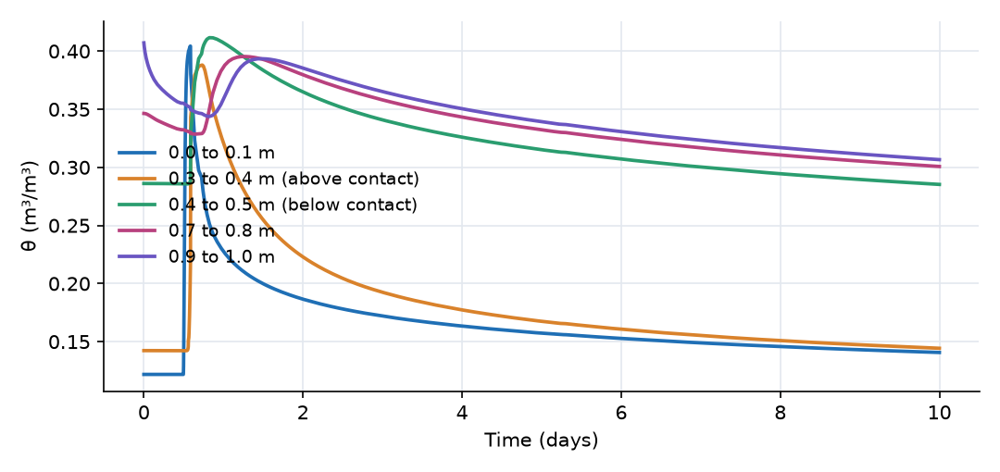
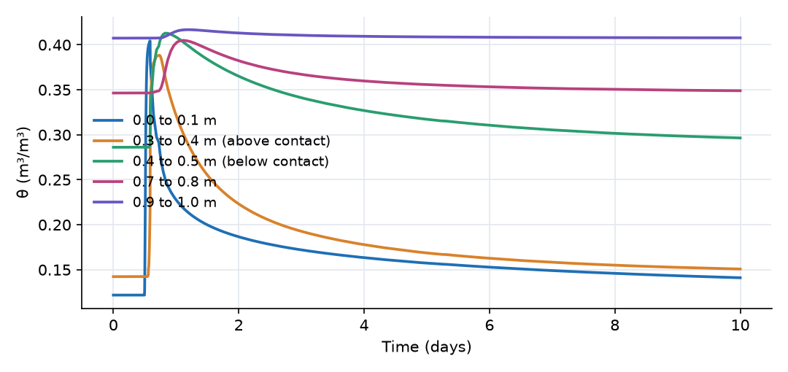
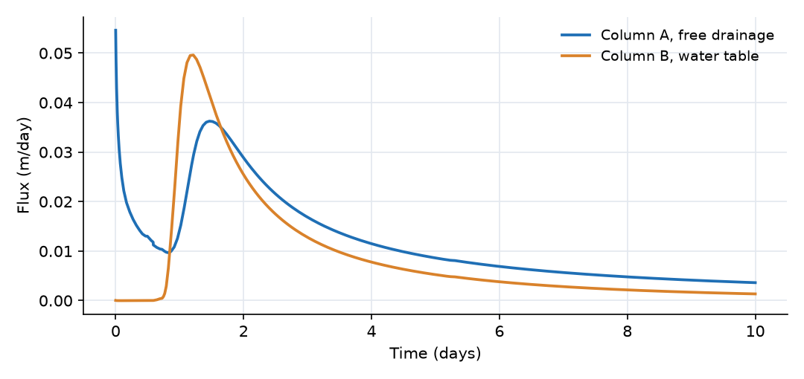

What this model represents
A soil column is the simplest setting in which to see variably saturated flow. Water applied at the top first fills the pores near the surface, then moves downward as a wetting front, and finally redistributes or drains, depending on what sits below the column. The upper boundary decides how much water gets in. The lower boundary decides where it goes.
This model places two identical 1.0 m columns side by side and gives both the same intense water application (100 mm in 2 hours). They differ only in their lower boundary:
- Column A ends in free drainage (a unit hydraulic gradient), the usual assumption for a deep vadose zone or a lysimeter that drains freely.
- Column B sits on a water table at its base, the situation in a shallow groundwater area.
Each column is layered: 0.4 m of sandy loam over 0.6 m of loam. A coarser soil over a finer one is common in alluvial and constructed soils, and it creates a perched, nearly saturated zone at the contact while the wetting front passes. The same setup can be used to examine stormwater infiltration practices, irrigation, or the sensitivity of recharge to the depth of the water table.
How it works
Soil cells. Each column is a stack of ten Soil blocks, 0.1 m thick with a 1 m² plan area. Each cell stores water and computes its state from that storage. The expressions below are from unsaturated_soil.json, the current soil plugin (the older variants in the resources folder are not used). With storage S, area A and thickness d:
θ = S / (A·d) Sₑ = (θ − θᵣ) / (θₛ − θᵣ), limited to the range 0.001 to 0.999 ψ_suction = −(1/α)·(Sₑ^(−1/m) − 1)^(1/n), with m = 1 − 1/n (van Genuchten)
When θ is pushed above the 0.999 saturation limit, the cell becomes pressurized through the specific storage Sₛ (0.01 1/m here):
ψ_excess = θₛ · max((θ − θᵣ)/(θₛ − θᵣ) − 0.999, 0) / Sₛ ψ = ψ_suction + ψ_excess
and the total head is
H = z_bottom + d + ψ
The plugin refers ψ to the top of the cell (z_bottom + d), not its midpoint. Because every cell uses the same convention, gradients between cells are unaffected, but the initial condition has to respect it (see below).
| Layer | Cells | Depth (m) | θₛ | θᵣ | α (1/m) | n | K_sat (m/day) |
|---|---|---|---|---|---|---|---|
| Sandy loam | 01 to 04 | 0.0 to 0.4 | 0.41 | 0.065 | 7.5 | 1.89 | 1.061 |
| Loam | 05 to 10 | 0.4 to 1.0 | 0.43 | 0.078 | 3.6 | 1.56 | 0.250 |
Flow between cells (soil_to_soil_link) is Darcy-Buckingham flow:
Q = K_eff · (H_upper − H_lower) / L · A K_eff = K_sat · [1 − (1 − Sₑ^(1/m))^m]²
with L the mean of the two thicknesses, K_sat the smaller of the two cells' saturated conductivities, m the mean of the two cells' m, and Sₑ the larger of the two effective saturations (capped at 0.999), so the wetter cell controls the relative conductivity. This is the Mualem-van Genuchten relative conductivity without the Sₑ^0.5 pore-connectivity factor. Positive Q is downward.
Surface ponding. Each surface is a Catchment block with no outlet. Rain from Storm is added to its storage, and its ponded depth is h_p = S/A. The surfacewater_to_soil_link moves ponded water into the top cell:
Q_inf = K_sat,top · (H_surface − H_top) / (d_top/2) · A · h_p/(h_p + 0.001 m)
where H_surface = elevation + h_p. The last factor switches infiltration off smoothly when less than about 1 mm of water is present, so the ponded depth cannot go negative. Rain is first added to the surface and infiltrates from there: the ponded depth stays near zero while the soil can accept the rain, and grows when it cannot.
Lower boundaries.
- Free drainage (
fixed_hydraulic_gradient_link, gradient i = 1): Q = i · K_eff · A, where K_eff uses the bottom cell's Sₑ. Outflow is simply the unsaturated conductivity of the bottom cell. - Water table (
soil_to_fixedhead_link): Q = (H_bottom − H_wt) · K_eff / (d/2) · A, again with K_eff from the bottom cell. The flux can reverse, which would represent capillary rise from the water table.
Initial condition. Every cell starts at the moisture content that puts it in hydrostatic equilibrium with a water table at −1.0 m: ψ = −1.0 m − (z_bottom + d), so H = −1.0 m everywhere. Moisture therefore increases with depth, from θ = 0.122 in the top cell to θ = 0.407 in the bottom cell. Column B is exactly at rest until the storm. Column A starts from the same profile but begins draining at once, because its lower boundary does not hold water up.
Rainfall input. OpenHydroQual converts each row of a precipitation file into a rate (depth divided by duration) at the interval midpoint and interpolates linearly between midpoints. The storm is therefore written as short intervals with dry rows before and after it, and the dry rows extend to the end of the simulation so that the rate is exactly zero outside the storm.
What to look for in the results
- Time to ponding. For the first few minutes the dry sandy loam takes almost all the rain: infiltration peaks at about 1.17 m/day against a rain rate of 1.2 m/day, then declines as the top cells approach saturation. Ponding begins about 4 minutes into the storm, and water stands on the surface for about 3 hours (day 0.503 to 0.623). The deepest ponding, 18 mm, occurs when the rain stops.
- Infiltration capacity. During ponding, infiltration settles near 0.83 m/day. This is below the sandy loam's K_sat (1.06 m/day) because the loam below, with a K_sat of 0.25 m/day, cannot carry water away as fast as the upper layer receives it.
- Perching at the layer contact. The wetting front reaches the contact at 0.4 m by the end of the storm. Cells 04 and 05 peak at θ = 0.39 and 0.41 (close to saturation) between days 0.73 and 0.82, while the soil at 0.7 m is still at its initial moisture. Water piles up above the slower loam before it can move on.
- The lower boundary decides the fate of the water. The two columns are identical at the surface and in the upper layer, and differ only in the deeper loam.
- Column A (free drainage) loses 10 mm before the storm even starts and 120 mm in all over 10 days, more than the 100 mm applied. It ends drier than it started (0.236 m of stored water against 0.257 m). Its outflow peaks at 0.036 m/day around day 1.5.
- Column B (water table) releases nothing until the wetting front arrives at about day 0.75. Because its bottom cell stays nearly saturated (θ never below 0.407), the boundary conducts well and the outflow peaks earlier and higher, at 0.050 m/day near day 1.2. Over the 10 days it passes 91 mm to the water table and ends with 9 mm more water than it started with, still draining slowly towards equilibrium.
- Water balance. For each column, storage change = applied rain − bottom outflow, to the precision of the output sampling. For column B: 0.2565 m + 0.100 m − 0.0909 m = 0.2656 m, the final storage.
Assumptions and limitations
- Flow is strictly vertical and one dimensional. There is no lateral flow, no evaporation from the surface and no root uptake (see the plant examples for transpiration).
- Each cell is 0.1 m thick, which smears the wetting front over two or three cells. Thinner cells sharpen it at the cost of run time.
- The relative conductivity omits the Mualem Sₑ^0.5 factor, and the conductivity between cells uses the wetter cell's saturation and the smaller K_sat. This upstream-like weighting is robust, but it differs from the arithmetic or geometric means used in some other codes.
- Air entrapment, hysteresis and macropore flow are not represented.
- The ponded surface has no outlet. In a real field the excess would run off once it exceeds depression storage.
- The storm (100 mm in 2 hours) is deliberately extreme so that ponding is clear. It is closer to a flood-irrigation event than to most natural rainfall.
Model diagram
Hover a block or link to see its name and type. Arrows show the positive flow direction.
Components
Click a component to see every property set in the model file, with units and meaning.
Blocks 24
Storage compartments: each holds water (and dissolved or particulate mass) and has a state that evolves in time.
Surface_ACatchmentThe 1 m² ground surface above column A. It is a Catchment block with no outlet, so rain that cannot infiltrate collects on it as ponded water. Its surface elevation is 0 m. The Manning coefficient is required by the block but unused, because no runoff link is attached.
Catchment: Catchment
| Property | Value | Unit | Meaning |
|---|---|---|---|
| Manning's Roughness Coefficient | 0.03 | The Manning's roughness coefficient representing surface resistance to flow. Typical values vary by land cover type. | |
| Precipitation | Storm | m^3/day | A precipitation source object must be selected. |
| Catchment area | 1.0 | m2 | Total horizontal surface area of the catchment. Used to compute initial storage and flow-related parameters. |
| Average water depth | 0 | m | The initial depth of the standing water before the simulation start time. Most of the times, this value is zero |
| Mean elevation of the catchment | 0.0 | m | The elevation of the centroid of the catchment based on the model datum. |
20 × SoilSoil · unsaturated_soilTwenty 0.1 m soil cells, ten per column (Soil_A01 to Soil_A10 and Soil_B01 to Soil_B10, numbered from the top). Cells 01 to 04 (0 to 0.4 m depth) are a sandy loam and cells 05 to 10 (0.4 to 1.0 m) are a loam, using the Carsel and Parrish (1988) class-average van Genuchten parameters. Both columns start from the same moisture profile, in hydrostatic equilibrium with a water table at −1.0 m.
Soil_A01, Soil_A02, Soil_A03, Soil_A04, Soil_A05, Soil_A06, Soil_A07, Soil_A08 …
Showing properties of Soil_A01.
Soil: Variably Saturated Soil Block
| Property | Value | Unit | Meaning |
|---|---|---|---|
| Saturated Hydraulic Conductivity | 1.061 | m/day | Saturated Hydraulc Conductivity |
| Van Genuchten's alpha parameter | 7.5 | 1/m | Van Genuchten's alpha parameter |
| Bottom Area of the soil block | 1.0 | m2 | Bottom Area of the soil block |
| Bottom Elevation of the soil block | -0.10 | m | Bottom Elevation of the soil block |
| Depth of the soil block | 0.1 | m | Depth of the soil block |
| Van Genuchten's n parameter | 1.89 | Van Genuchten's n parameter | |
| Specific storage | 0.01 | 1/m | Specific storage |
| Initial Moisture Content | 0.1218 | Initial Moisture Content; Moisture Content | |
| Residual Moisture Content | 0.065 | Residual Moisture Content | |
| Saturated Moisture Content | 0.41 | Saturated Moisture Content |
Drainage_outletfixed_headA sink below column A. Because the link into it imposes a fixed hydraulic gradient, its head (−2 m) does not affect the flow.
fixed_head: Fixed-head boundary
| Property | Value | Unit | Meaning |
|---|---|---|---|
| Initial Storage | 100000 | m3 | |
| Head | -2 | m |
Surface_BCatchmentThe same surface over column B.
Catchment: Catchment
| Property | Value | Unit | Meaning |
|---|---|---|---|
| Manning's Roughness Coefficient | 0.03 | The Manning's roughness coefficient representing surface resistance to flow. Typical values vary by land cover type. | |
| Precipitation | Storm | m^3/day | A precipitation source object must be selected. |
| Catchment area | 1.0 | m2 | Total horizontal surface area of the catchment. Used to compute initial storage and flow-related parameters. |
| Average water depth | 0 | m | The initial depth of the standing water before the simulation start time. Most of the times, this value is zero |
| Mean elevation of the catchment | 0.0 | m | The elevation of the centroid of the catchment based on the model datum. |
Water_tablefixed_headA fixed water table at −1.0 m elevation, the base of column B.
fixed_head: Fixed-head boundary
| Property | Value | Unit | Meaning |
|---|---|---|---|
| Initial Storage | 100000 | m3 | |
| Head | -1.0 | m |
Links 22
Connections that move water (and the mass it carries) between blocks.
Infiltration_Asurfacewater_to_soil_link · unsaturated_soilMoves ponded water from Surface_A into the top soil cell. Positive downward.
surfacewater_to_soil_link: Surfacewater to soil connector
18 × soil_to_soil_linksoil_to_soil_link · unsaturated_soilVertical Darcy-Buckingham flow between neighbouring cells of the same column (nine links per column, named Flow_A01_A02 and so on). Positive downward, negative when water moves up by capillary rise.
Flow_A01_A02, Flow_A02_A03, Flow_A03_A04, Flow_A04_A05, Flow_A05_A06, Flow_A06_A07, Flow_A07_A08, Flow_A08_A09 …
Showing properties of Flow_A01_A02.
soil_to_soil_link: Vertical soil to soil connector
Free_drainagefixed_hydraulic_gradient_link · unsaturated_soilUnit-gradient (free drainage) lower boundary of column A: outflow equals the unsaturated hydraulic conductivity of the bottom cell. Water can only leave.
fixed_hydraulic_gradient_link: Fixed Hydraulic Gradient link
| Property | Value | Unit | Meaning |
|---|---|---|---|
| Hydraulic Gradient | 1 | Hydraulic Gradient | |
| Interface area | 1.0 | m2 | Interface area |
Infiltration_Bsurfacewater_to_soil_link · unsaturated_soilThe same for column B.
surfacewater_to_soil_link: Surfacewater to soil connector
Water_table_exchangesoil_to_fixedhead_link · unsaturated_soilLower boundary of column B: Darcy flow between the bottom cell and the water table. Positive downward (recharge); negative values would mean capillary supply from the water table.
soil_to_fixedhead_link: Soil to fixed head connector
Sources 1
External inputs or sinks applied to blocks: rainfall, evaporation, loads, exchange with the atmosphere.
StormPrecipitationA short, intense water application: 100 mm in 2 hours (50 mm/h) starting at day 0.5, read from storm.txt. Both columns receive it. The rate is chosen to exceed the infiltration capacity of the soil so that water ponds at the surface.
storm.txt. Both columns receive it. The rate is chosen to exceed the infiltration capacity of the soil so that water ponds at the surface.Precipitation: Precipitation
| Property | Value | Unit | Meaning |
|---|---|---|---|
| Precipitation Cumulative | storm.txt | m |
Input files
storm.txt | Rainfall in the OpenHydroQual precipitation format: start time (day), end time (day), depth (m) per row. Twelve 10-minute intervals of 8.33 mm between day 0.5 and day 0.5833, padded with dry intervals that cover the whole simulation. |
Simulation settings
| Start time | 0 |
| End time | 10 |
| Initial time step | 0.001 |
| Write interval (steps) | 5 |
| Newton-Raphson tolerance | 0.0001 |
Results
Produced by running the downloaded model unchanged.




